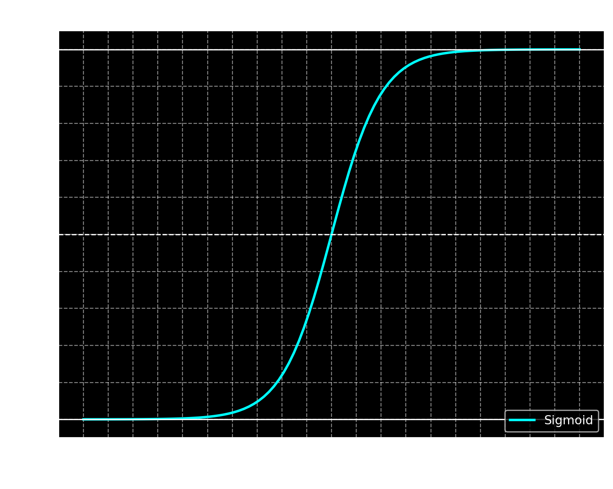

09-05
Model setup
Our goal is to sort movie reviews into two classes, positive and negative. The strategy has been to generate a score \[z = xw + b\] for each movie review, and tweak the formula behind the scores so that positive reviews have higher scores and negative reviews have lower scores.
The score \(z\) can be any real number. (Meaning, any number on the number line, from negative infinity to positive infinity.) But what we actually want is for the model to guess whether the review is positive or negative.
To do this, let’s assume that 1 means positive and 0 means negative. We want to take our scores, which go from negative to positive infinity, and “squish” them down into the interval (0,1).
To do this, we use the sigmoid function, which does exactly that. In addition to squishing the scores into a bounded interval, sigmoid has the property that \(\sigma(0) = \frac12\). When \(z\) gets very large in the positive direction, \(\sigma(z)\) gets close to \(1\), and when \(z\) gets large in the negative direction, \(\sigma(z)\) gets close to \(0\).
\[ \sigma(z) = \frac{1}{1 + \exp(-z)}\]
From scores to model predictions
Remember that \(z\) is a vector of scores, with one score for every document we put in. For example, if we put in \(5\) documents, then \(x\) will have \(5\) rows, and \(z\) will also have \(5\) rows. Therefore, \(z\) would have only \(5\) numbers, since it has just one column.
The model’s predictions are called \(\hat y\), which is pronounced “y hat”. We get the predictions by taking our scores and putting them through the sigmoid function, so \(\hat y = \sigma(z)\). Each score in \(\hat y\) is a number between 0 and 1. We can interpret each of these numbers as the probability that the corresponding review is positive.
NOTE: The symbol \(\sigma\) is the greek letter sigma. The sigmoid function is also known as the logistic function.
Example
For our example, let’s use three features: the total word count of the document, the number of positive words, and the number of negative words. (Note that the order is a bit different from the one we used in class.) Here are four example documents.
flowchart LR
W["+, I was happy with this great movie"] --> A["[6, 2, 0]"]
X["- , That was terrible"] --> B["[3, 0, 1]"]
Y["+, Great movie"] --> C["[2, 1, 0]"]
Z["-, The terrible acting actually made it fun to watch"] --> D["[7, 1, 1]"]
Matrix multiplication
To calculate the scores for multiple reviews at once, we use matrix multiplication. Each feature representation is a row of 3 numbers, so if we have 4 reviews in the dataset, then we end up with a \(4\times 3\) matrix representing the dataset. \(y\) is a vector representing the true labels of each example, 1 for positive and 0 for negative.
\[y = \left[\begin{array}{c} 1 \\ 0 \\ 1 \\ 0 \end{array}\right] \,\,\,\,\,\,\,\,\,\,\,\,\,\,\,\,\,\, x = \left[\begin{array}{ccc} 6 & 2 & 0 \\ 3 & 0 & 1 \\ 2 & 1 & 0 \\ 7 & 1 & 1 \end{array}\right]\]
Our weights will be a \(3 \times 1\) column because we have three features. The bias will be a single number. The bias is repeated 4 times in a column, so that it has the same shape as \(xw\) (\(4 \times 1\)).
Here’s an example weight matrix. Here we are giving weight \(-1\) to the total word count (length), weight \(2\) to the positive words, and weight \(-2\) to the negative words.
\[w = \left[\begin{array}{ccc} -1 \\ 2 \\ -2 \end{array}\right]\]
Let’s make our example bias \(4\). Then we end up with the following \(z\) scores.
\[z = xw + b = \left[\begin{array}{ccc} 6 & 2 & 0 \\ 3 & 0 & 1 \\ 2 & 1 & 0 \\ 7 & 1 & 1 \end{array}\right] \left[\begin{array}{ccc} -1 \\ 2 \\ -2 \end{array}\right] + \left[\begin{array}{ccc} 4 \\ 4 \\ 4 \\ 4 \end{array}\right]\]
\[= \left[\begin{array}{ccc} 6 \cdot (-1) + 2 \cdot 2 + 0 \cdot (-2) \\ 3 \cdot (-1) + 0 \cdot 2 + 1 \cdot (-2) \\ 2 \cdot (-1) + 1 \cdot 2 + 0 \cdot (-2) \\ 7 \cdot (-1) + 1 \cdot 2 + 1 \cdot (-2) \end{array}\right] + \left[\begin{array}{ccc} 4 \\ 4 \\ 4 \\ 4 \end{array}\right] = \left[\begin{array}{ccc} -2 \\ -5 \\ 0 \\ -7 \end{array}\right] + \left[\begin{array}{ccc} 4 \\ 4 \\ 4 \\ 4 \end{array}\right] = \left[\begin{array}{ccc} 2 \\ -1 \\ 4 \\ -3 \end{array}\right]\]
With these weights and biases, we end up with positive \(z\) for reviews 1 and 3, and negative \(z\) for reviews 2 and 4. The sigmoid \(\sigma\) function will turn the positive \(z\) scores into probabilities greater than 0.5, and negative z scores into probabilities smaller than 0.5. Sigmoid takes in a single number, so we apply it element-wise (meaning, to each element of the vector).
\[\hat y = \sigma(z) = \sigma\left(\left[\begin{array}{c} 2 \\ -1 \\ 4 \\ -3 \end{array}\right]\right) = \left[\begin{array}{c} \sigma(2) \\ \sigma(-1) \\ \sigma(4) \\ \sigma(-3) \end{array}\right] = \left[\begin{array}{c} 0.88 \\ 0.27 \\ 0.95 \\ 0.05 \end{array}\right]\]
Recall that the true labels for the documents were:
\[y = \left[\begin{array}{c} 1 \\ 0 \\ 1 \\ 0 \end{array}\right]\]
We can look at the differences between the true labels \(y\) and the predicted labels \(\hat y\). The goal is to approximate the true labels as closely as possible, so the smaller these differences are, the better our model is.
\[y - \hat y = \left[\begin{array}{c} 1 \\ 0 \\ 1 \\ 0 \end{array}\right] - \left[\begin{array}{c} 0.88 \\ 0.27 \\ 0.95 \\ 0.05 \end{array}\right] \,\,\,\, = \,\,\,\, \left[\begin{array}{c} 0.12 \\ -0.27 \\ 0.05 \\ -0.05 \end{array}\right]\]
Summing up
We now know how to write down the formulas for one-layer sigmoid classifier and apply it to binary text classification. In the future, we’ll look multi-class classification (where there are more than two output labels).
We’ll also start to look at representation learning, the art of learning features from data (rather than hand-crafting them, like we’ve done here).